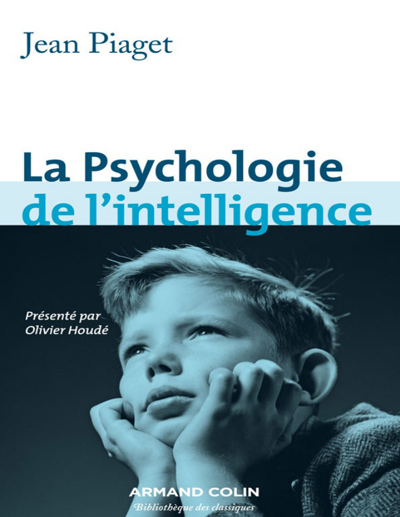

La Psychologie de l’intelligence





Carte d’identité
- Auteur
- Jean Piaget
- Genre
- Savoirs
- Sous-genre
- Psychologie
- Éditeur
- Armand Colin
- Parution de l’édition
- 2012
- Première parution
- 1947
- ISBN de la réédition
- 978-2-200-28364-3
- Langue de l’édition
- Français
- Fichier du site
- PDF · 171 pages
Première édition en 1947. Réédition de 2012 avec une préface d’Olivier Houdé.
Préface d’Olivier Houdé.
 Résumé du livreL’essentiel en quelques lignes
Résumé du livreL’essentiel en quelques lignes
Jean Piaget explique comment l’intelligence se construit à partir de l’action et se transforme à mesure que l’enfant coordonne ses raisonnements. Il compare la perception, les habitudes et les opérations logiques. Le dernier chapitre examine la place des échanges sociaux dans ce développement.
 Chapitre par chapitre6 entrées
Chapitre par chapitre6 entrées
-
01 Intelligence et adaptationPDF p. 24
Piaget présente l’intelligence comme une forme d’adaptation. Il examine comment nous appliquons des façons de penser déjà acquises et comment nous les modifions devant une situation nouvelle.
Lire à cette page ↗ -
02 Les opérations logiquesPDF p. 37
Le chapitre distingue une opération mentale d’une simple association d’idées. Il explique comment plusieurs actions de pensée se coordonnent et peuvent être inversées.
Lire à cette page ↗ -
03 De la perception à l’intelligencePDF p. 66
Piaget compare ce que la perception saisit d’un seul coup et ce que le raisonnement peut reconstruire. Il discute notamment la stabilité des formes et des grandeurs.
Lire à cette page ↗ -
04 Habitude et actionPDF p. 95
Chez le jeune enfant, les habitudes motrices sont un point de départ. Piaget examine comment elles deviennent des actions organisées pour atteindre un but.
Lire à cette page ↗ -
05 La construction de la penséePDF p. 122
Le livre suit le passage d’une pensée intuitive aux opérations sur des objets et, plus tard, aux raisonnements sur des hypothèses. Il observe ce que chacune de ces étapes permet de faire.
Lire à cette page ↗ -
06 L’effet du milieu socialPDF p. 153
Piaget examine la part du langage, des échanges et de la coopération dans la pensée. Il les relie au niveau de développement qui permet à l’enfant de s’en servir.
Lire à cette page ↗
Les fils du livre


Mon carnet de lecture
Mes étoiles
0 critique
Ma critique sur ce livre ↗